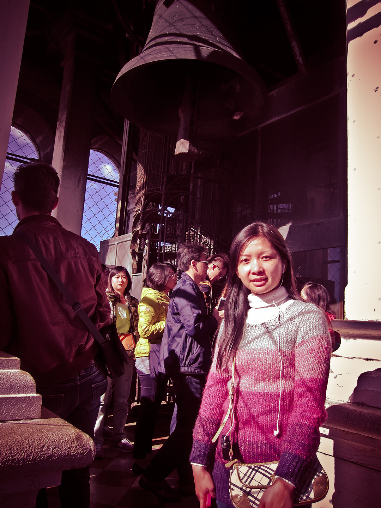

愛在水都、古城與美酒的浪漫義大利
那年秋天，我們飛向歐洲，踏上了浪漫的義大利，展開屬於我們的第二次蜜月。
第一站前往白露里治奧（Civita di Bagnoregio），這座被稱作「空中之城」的村莊，
靜靜佇立在斷崖之上，仿佛一不小心就會從時光縫隙中消失，卻也因此更顯珍貴。
旅程一路向前，火車帶我們來到色彩繽紛的 五漁村。
懸崖上的房子像彩虹般鋪展，海風輕拂，浪濤聲不斷拍打，在這裡就像時間靜止一樣與世無爭。
而在威尼斯，坐著貢多拉在運河間輕輕搖晃，看夕陽灑落水面，
像極了我們此行的心境, 充滿浪漫、夢幻，卻又真實得讓人難忘。
這是我此生最愛的景點與片刻。
浪漫不是安排好的橋段，而是當最愛在你身邊時，一切都成了浪漫。
最後一站，我們坐在西班牙階梯上，看著人潮如川流不息。
陽光灑落階梯與人群，那一刻沒有壯闊風景，只有靜靜相依的平凡，卻比任何華麗場景都來得動人。
旅行的意義，不只是到此一遊，而是一次又一次，把愛情與回憶寫進我們共同的故事裡。# 蜜月真的適合捷克與義大利
# 封面是用前往五漁村的火車上拍攝的照片合成
-

走在Civita(天空之城)內，難以忘懷的美麗~
你的每次回眸，我都能為之傾倒。# 拉齊奧 Civita di Bagnoregio 老街
-
懸崖上的靈魂之城，就像大海中的一座絕美孤島。
# Civita di Bagnoregio 觀景台
-
在田野廣場席地而坐，夕陽把我變成人形日晷。
# 錫耶納 田野廣場 Piazza del Campo
-
張開雙臂，享受托斯卡尼的藍天與風情。
# 義大利 Siena 老城巷弄
-
不只日本~來義大利也得嚐嚐冰淇淋的口味。
# 義大利 Siena 老城區
-
牆上掛滿餐盤，托斯卡尼把日常曬成了藝術展。
# 義大利 Toscana 托斯卡尼 手作陶瓷小店
-
這麼多有趣的斜塔照姿勢，就站直最稀有XD
# 義大利 Pisa 比薩斜塔 Torre di Pisa
-
等待火車前往五漁村 ^^
# 義大利 Cinque Terre 五漁村車站
-
五漁村的繽紛色彩，讓人難以忘懷。
# 義大利 Cinque Terre 五漁村 Monterosso al Mare
-
五漁村屋肩並肩，浪語替我說想念。
# 義大利 Cinque Terre 五漁村 Monterosso al Mare
-

米蘭大教堂的莊嚴壯麗。
# 米蘭 Duomo di Milano
-
教堂前的大合照，記錄此次旅遊認識的友善團友們。
# 義大利 Milano 米蘭主教座堂 Duomo di Milano
-
下一站來到時尚之都米蘭~
# 義大利 Milano 米蘭 艾曼紐二世拱廊 Galleria Vittorio Emanuele II
-
馬賽克地磚像伸展台，兩旁的店家擺飾真是富麗堂皇。
# 義大利 Milano 米蘭 拱廊餐館
-
在百年拱廊前裝可愛XD
# 義大利 Milano 米蘭 Galleria Vittorio Emanuele II
-
小妹說要幫我拍張藝術照。
# 義大利 Sirmione 西米歐內 加爾達湖畔
-

九重葛把房子穿成婚紗，我們站在門前，練習當幸福的鄰居。
# 義大利 Sirmione 西米歐內 花牆小屋
-

石拱千年依舊在，人間悠閒一笑甜。
# 義大利 Verona 維洛那競技場 Arena di Verona
-
維羅納陽光把廣場曬成明信片。
# 維羅納 Verona 布拉廣場 Piazza Bra
-
日光照著維羅納的每一圈拱門上~
# 義大利 Verona 維羅納競技場 Arena di Verona
-

浪花拍石板，貢多拉在岸邊排隊等夕陽點名。
# 威尼斯 聖馬可濱海步道 Riva degli Schiavoni
-
仰角100%，脖子90°，甜度一路升到鐘樓頂。
# 威尼斯 聖馬可鐘樓 Campanile di San Marco
-
坐在貢多拉上，隨著船伕的划槳四處悠遊，威尼斯真的是美呆了!!
# 威尼斯 大運河・聖母健康聖殿 Santa Maria della Salute
-
威尼斯的塔也會斜~
# 義大利 Venezia San Giorgio dei Greci 斜塔 / 小橋運河
-
青銅馬在雲底奔跑，我假裝是威尼斯的騎士。
# 義大利 Venezia 里瓦大道／維托里奧．埃馬努埃萊二世騎馬像
-
陽台綴滿花，石牆被午後烤成蜂蜜色~
# 義大利 Venezia 威尼斯巷弄
-
一邊聽著導遊解說，一邊抓緊角度自拍。
# 義大利 Venezia 聖馬可海濱／聖瑪利亞德拉薩盧特聖殿
-
鐘樓好像一支鉛筆，天空藍得讓心情簽名。
# 義大利 Venezia 聖馬可鐘樓 Campanile di San Marco
-
海水漲潮淹上威尼斯，輕步走在臨時搭的高腳步道~
# 義大利 Venezia 聖馬可廣場／聖馬可大教堂
- 
爬上鐘塔等待鐘聲落下的那一秒 :)
# 義大利 Venezia 聖馬可鐘樓／鐘室
-
雲幕被風拉開，廣場亮得像新翻的書頁，旅人都是註腳。
# 義大利 Venezia 聖馬可廣場 Piazza San Marco
-
槳聲劃開午後，我們在橋影下偷一口甜，威尼斯都說讚。
# 義大利 Venezia 威尼斯小運河／貢多拉 Gondola
-
城市像一艘大船，屋瓦是帆、陽光是風；藍色拖長了我們的故事。
# 義大利 Venezia 大運河 Canal Grande／潟湖
-
威尼斯美的不像畫，隨處駐足的巷弄都像張明信片~
# 義大利 Venezia 巷內小橋／小運河
-
橋上陽光像灑落的音符，船歌在下面練習，我在上面偷聽。
# 義大利 Venezia 威尼斯 小運河橋
-
海風把影子拉長到明天。
# 義大利 Venezia 聖馬可海濱 Riva degli Schiavoni
-
原來傾斜的不只比薩，這座鐘樓也略帶微醺；我們站直就好。
# 義大利 Venezia San Giorgio dei Greci 鐘樓／小運河
-
黃昏把運河熬成琥珀色的海~
海風把鐘聲攪散，
我們在光裡安靜成剪影。# 義大利 Venezia 威尼斯 Riva degli Schiavoni 日落
-
站在聖母百花前，震驚它的獨特風格。
# 佛羅倫斯 聖母百花大教堂 Duomo
-

穹頂像盞盛秋光，巷口一笑暖肩旁。
# 義大利 Firenze 聖母百花大教堂 Duomo
-
在百年牆上靠著歇息，讓旅程在這裡喘口氣。
# 義大利 Firenze 歷史中心街道
-
轉進小巷，巨作忽然近到只剩一個轉身的距離~
# 義大利 Firenze Duomo 側巷
-
街道旁的新鮮蔬果攤~
# 義大利 Firenze 巷弄蔬果店
-
義大利女郎們攻占領主廣場，塔鐘當背景。
# 義大利 Firenze 領主廣場 Piazza della Signoria／市政廳 Palazzo Vecchio
-
把眼睛交給藝術，把時間交給彼此。
# 梵蒂岡 Vatican 梵蒂岡博物館 入口
-
兩邊小天使替我們顧門。
可以守住我們的好心情嗎？
天使：可以，但請先微笑。# 義大利 Firenze 聖母百花大教堂（內部）
-
聖彼得大教堂的金色穹頂下，忽然相信祈願會被聽見。
梵蒂岡城的聖彼得大教堂（Basilica di San Pietro in Vaticano）
-
在梵蒂岡的傍晚，我回頭看見你在人海裡朝我微笑。
# 梵蒂岡 梵蒂岡城 聖彼得廣場 Piazza San Pietro
-

順著石板路向前，天空像洗過一樣乾淨。
# 梵蒂岡 梵蒂岡城 聖彼得廣場 Piazza San Pietro
-
就是這道光~
# 梵蒂岡 梵蒂岡城 聖彼得廣場 Piazza San Pietro
-

柱廊一圈又一圈，像抱住城市的臂彎。
# 梵蒂岡 梵蒂岡城 聖彼得廣場 Piazza San Pietro
-
凱旋門曬得發亮，故事都在浮雕裡醒來。
找的到我們在哪嗎?# 義大利 Rome 君士坦丁凱旋門 Arco di Costantino
-
再來一張，只要我們不尷尬...尷尬的就是別人XD
# 義大利 Rome 君士坦丁凱旋門 Arco di Costantino
-
走進千年的競技場，想像當時的繁榮與盛況。
# 義大利 Rome 羅馬競技場 Colosseo
-
陽光在石壁上奔跑，我們在時間的舞台做臨演。
我：如果能穿越到古羅馬，你想看什麼？
小妹：看你保護我。# 義大利 Rome 羅馬競技場 Colosseo
-
小妹：走累了嗎？
我：不，跟你走怎麼會。# 義大利 Rome 羅馬競技場 Colosseo
-

跟對的人怎麼拍都美~
# 義大利 Rome 納沃納廣場 Piazza Navona
-
站在歷史的圓形舞台外~
# 義大利 Roma 羅馬競技場 Colosseo
-
勝利的拱門收集了旅人的腳步，我們只帶走一枚藍天與回憶。
# 義大利 Roma 提圖斯凱旋門 Arch of Titus
-
廢墟像一部靜音電影，風是旁白，太陽是配樂，而我們是走在字幕裡的主角。
# 義大利 Roma 羅馬廣場 Roman Forum
-
回頭與納沃納的方尖碑合影~
# 義大利 Roma 納沃納廣場 Piazza Navona｜四河噴泉
-

西班牙階梯擺滿了午後的陽光與笑聲 :)
# 義大利 Roma 西班牙階梯 Piazza di Spagna
-

把夕陽當門票，金光沿階滑落，我們把回憶坐成長長的剪影。
# 義大利 Roma 西班牙階梯 Piazza di Spagna